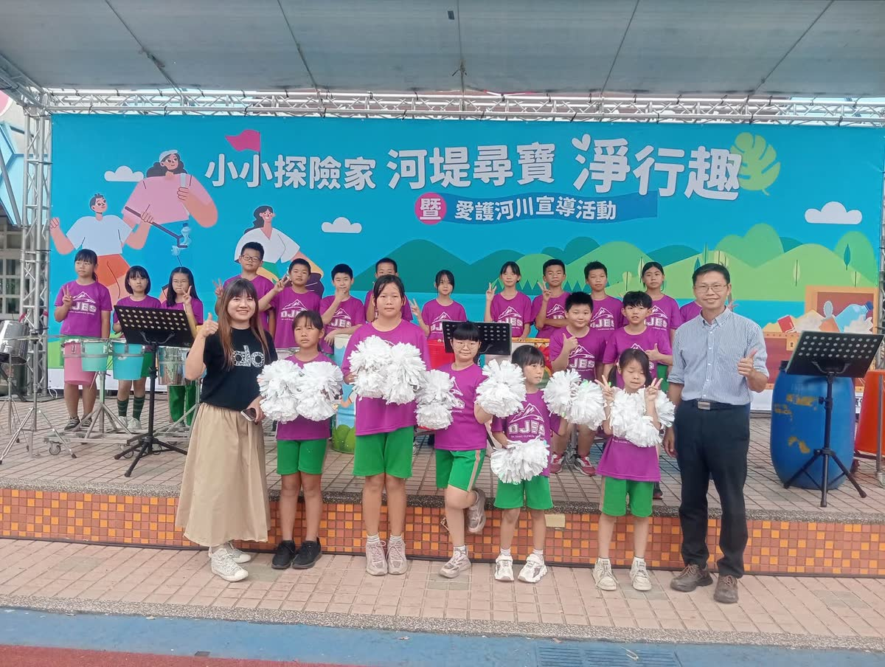
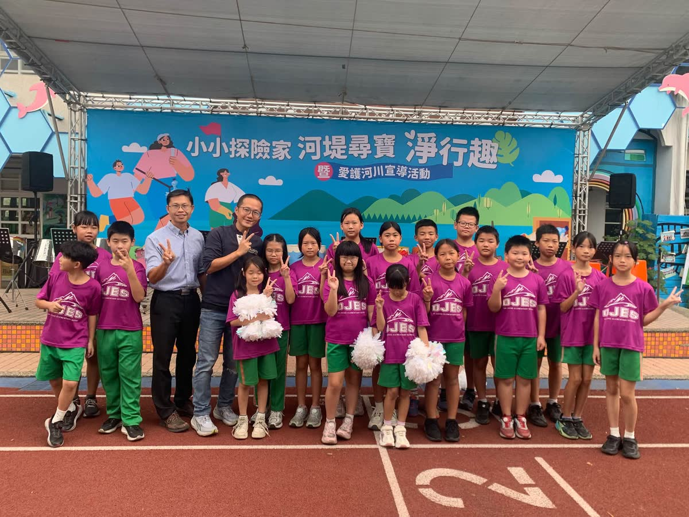
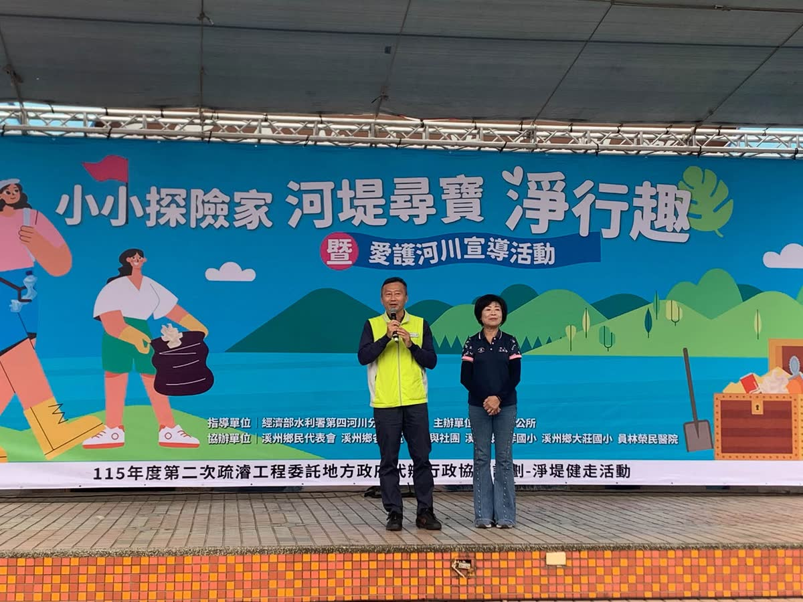

大莊環保打擊樂團在活動舞台前合影，身後的水桶、鐵桶、塑膠桶都是他們的樂器


左：表演結束，樂團孩子在跑道上比 YA 合影 右：貴賓上台致詞，宣導愛護河川
On Saturday, November 14, 2026, Dajuang Elementary was the home base for Little Explorers: River-Dike Treasure Hunt & Clean-Up Fun, a river-care event held by the Xizhou Township Office and the Fourth River Management Branch of the Water Resources Agency. For one day, our campus became a place where the whole community came together to learn about protecting rivers and caring for the environment.
Our Eco-Drumming Band was invited to perform. Playing drums made from buckets, barrels, and other recycled things, the band filled the stage with powerful, happy beats and plenty of passion for keeping our rivers clean.
- 🚶Clean-Up Walk健行淨堤
Families and volunteers walked about 2 kilometers along the Dajuang river dike, picking up litter as they went. Along the way were three stamp stations, and anyone who collected all three stamps got a NT$100 voucher to spend at the stalls.
- 🗺️Treasure Hunt河堤尋寶闖關
Children became little explorers and took on five challenge stations, learning about rivers and water one fun task at a time. Kids who cleared all five could trade their stamps for a towel, while supplies lasted.
- 🎪Shows for Everyone精彩表演
Along with our drumming band, there were community performances, a magic balloon show, glowing diabolo tricks, and juggling. A colorful balloon activity wrapped up the day with lots of smiles.
The organizers hoped families would carry home one simple message: don't litter, save water, and love our rivers. Principal Lyu Yan-yi invited parents, children, and neighbors to get outdoors, get close to the river, and discover the natural beauty of their hometown, starting with one fun treasure hunt.
Thank you to Xizhou Township Mayor Chiang Shu-fen, Director Chang Chao-kung of the Fourth River Management Branch, Legislator Hsieh Yi-fong, and Principal Yeh Chen-wei for joining us. And a big thank-you to our hard-working school team, Chien-Li, Min-Hsien, and Ming-Pin, for helping with the performance and getting the venue ready.
This event was also reported in the Taiwan Shin Sheng Daily News on November 15, 2026.本活動亦刊登於 115 年 11 月 15 日《台灣新生報》綜合新聞版。
115.11.14 小小探險家－河堤尋寶淨行趣
🌟 溪州鄉公所與水利署第四河川分署共同舉辦「小小探險家・河堤尋寶淨行趣暨愛護河川宣導活動」，選址大莊國小辦理，讓校園成為推廣河川保育、環境教育與社區參與的重要場域。感謝江淑芬鄉長、張朝恭分署長、謝衣鳯立委、葉振偉校長蒞臨。
🌟 大莊國小環保打擊樂團受邀參與，以充滿活力的鼓聲，為河川環境保護注入熱情與力量。
🌟 辛苦學校團隊芊秝、旻仙、銘斌大哥協助表演與場地事項。
River Explorers · Words to Learn英語學習角 · 河川小探險家的單字
Eight key words from the river event, each with an example sentence. Then try the conversation and a five-question quiz. Tap 🔊 to listen.
八個河川活動關鍵字，每個字配一個例句；接著練習對話，最後做五題小考。點 🔊 聽發音。
情境：河堤活動結束後，兩位大莊的同學聊起今天的經過。